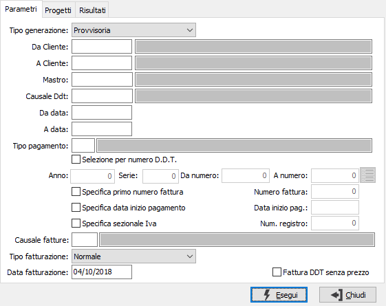
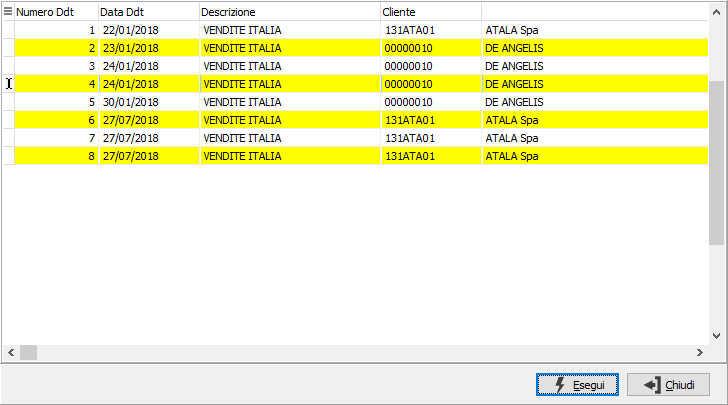
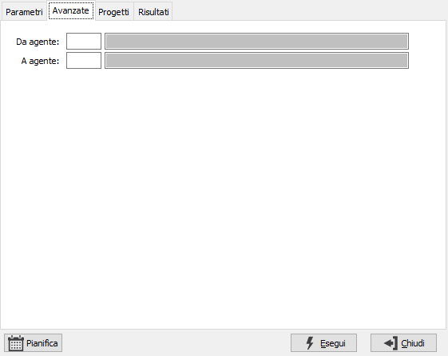
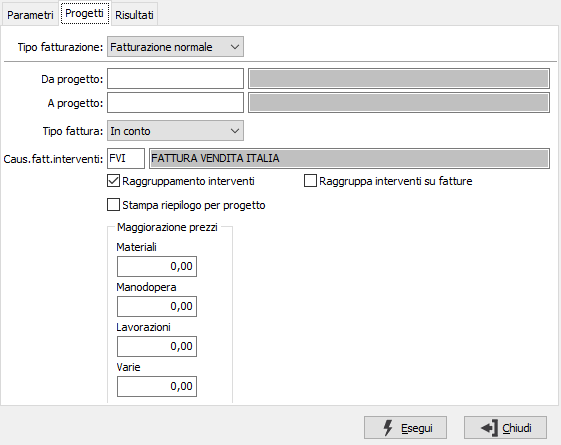
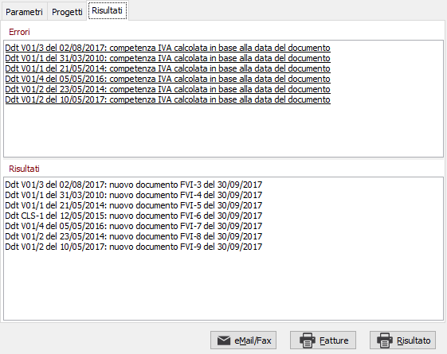

Se
abilitata
la pianificazione batch
sarà visibile il pulsante Pianifica.
Se
abilitata
la pianificazione batch
sarà visibile il pulsante Pianifica.Generazione fatture
Il programma effettua la generazione delle fatture di vendita, provvisoria o definitiva, utilizzando i dati dei Ddt esistenti in archivio in base ai parametri inseriti dall’utente. La sezione progetti implementa la gestione dei progetti alla generazione automatica delle fattura da DDT e da interventi; è visibile solo se è presente il modulo gestione progetti/commesse.

TIPO GENERAZIONE: definisce il tipo di operazione da compiere: provvisoria oppure definitiva. La generazione provvisoria può essere effettuata più volte e non aggiorna nessuna tabella, ma genera soltanto la stampa di un brogliaccio di fatturazione; la generazione definitiva aggiorna le tabelle e per annullarla è necessario seguire una specifica procedura ed è consigliabile contattare il servizio Assistenza.
DA CLIENTE: codice del cliente, presente in anagrafica clienti, da cui si vuole iniziare la selezione. Confermando a vuoto, la selezione inizia dal primo cliente valido. Sul campo sono attive le funzioni di ricerca (F9).
A CLIENTE: codice del cliente, presente in anagrafica clienti, con cui si vuole terminare la selezione. Confermando a vuoto, la selezione termina con l'ultimo cliente valido. Sul campo sono attive le funzioni di ricerca (F9).
MASTRO: codice del mastro, presente nella tabella mastri, per cui si vuole effettuare la selezione. Confermando a vuoto vengono considerati validi tutti i mastri. Sul campo sono attive le funzioni di ricerca (F9).
CAUSALE DDT: codice della causale Ddt, presente nella tabella causali Ddt, per cui si vuole effettuare la selezione. Confermando a vuoto vengono considerate valide tutte le causali. Sul campo sono attive le funzioni di ricerca (F9).
DA DATA: eventuale data del documento da cui deve iniziare l'elaborazione dei documenti relativamente ai precedenti parametri inseriti. Confermando a vuoto, la selezione inizia con il primo documento valido.
A DATA: eventuale data del documento con cui si desidera terminare l’elaborazione dei documenti relativamente ai precedenti parametri inseriti. Confermando a vuoto, la selezione si conclude con l'ultimo documento valido.
TIPO PAGAMENTO: codice del tipo di pagamento, presente nella tabella tipi pagamento, per cui si vuole effettuare la selezione. Confermando a vuoto vengono considerati validi tutti i tipi di pagamento. Sul campo sono attive le funzioni di ricerca (F9).
SELEZIONE PER NUMERO DDT: check box che abilita i campi sottostanti per effettuare la selezione dei documenti per numero, casella con segno di spunta.

ANNO/SERIE/DA NUMERO/A NUMERO: campi abilitati solo se la casella precedente è spuntata; consentono di specificare i limiti di selezione per anno, serie e numero dei Ddt da considerare per la generazione delle fatture. Se abilitata la casella precedente si attiva il pulsante a fianco; premendolo si accede ad una finestra che riporterà i ddt da fatturare elaborati in base ai limiti inseriti in precedenza; da questa finestra è possibile selezionare i ddt che si vogliono fatturare; la pressione del pulsante Esegui conferma la scelta effettuata e saranno fatturati solo i Ddt selezionati.SPECIFICA PRIMO NUMERO FATTURA: check box che abilita il campo successivo per specificare il numero con cui dovrà iniziare la fatturazione, casella con segno di spunta.
NUMERO FATTURA: campo abilitato solo se la casella precedente è spuntata; consente di inserire il numero con cui iniziare la fatturazione.
SPECIFICA DATA INIZIO PAGAMENTO: check box che abilita il campo successivo per specificare la data da cui iniziare a conteggiare le scadenze, casella con segno di spunta.
DATA INIZIO PAGAMENTO: campo abilitato solo se la casella precedente è spuntata; consente di specificare la data di partenza per il calcolo del piano di pagamento.
SPECIFICA SEZIONALE IVA: check box che abilita il campo successivo per specificare il numero di registro Iva su cui effettuare la fatturazione, casella con segno di spunta.
NUMERO REGISTRO: campo abilitato solo se la casella precedente è spuntata; consente di selezionare il numero di sezionale Iva di cui si intende generare le fatture; vengono selezionate solo le causali di fatturazione che fanno riferimento a tale sezionale Iva.
CAUSALE FATTURE: codice della causale, presente nella tabella causali fatture, riferita alla causale del Ddt, con cui si vuole effettuare la generazione delle fatture. Confermando a vuoto non sarà effettuato nessun controllo sulle causali fatture presenti nelle causali Ddt. Sul campo sono attive le funzioni di ricerca (F9).
TIPO FATTURAZIONE: definisce la tipologia di fatturazione in relazione a quanto specificato sulla tabella clienti: normale, quindicinale o mensile.
DATA FATTURAZIONE: indica la data con cui deve essere effettuata la fatturazione. Nel caso in cui questa data sia precedente a quella indicata nel campo "a data" saranno considerati solo i documenti fino alla data fatturazione.
FATTURA DDT SENZA PREZZO: definisce se riportare in fattura anche i DDT sui quali non è specificato nessun prezzo (casella con segno di spunta).
Avanzate
Se non sono gestiti gli agenti di rigo è presente la pagina avanzate in cui è possibile inserire un filtro per agente (da codice agente, a codice agente);i filtri eventualmente inseriti ed il tipo di ordinamento (configurabile nelle vendite "Tipo ordinamento fatturazione" per agente), considerano entrambi i campi agente presenti sulla testa del Ddt.

Progetti
Se attivo il modulo di gestione progetti/commesse viene visualizzata una ulteriore pagina di criteri di selezione specifici per la generazione delle fatture per progetto, contenenti sia normali documenti di vendita che registrazioni di interventi effettuati attraverso la procedura di registrazione manodopera.

TIPO FATTURAZIONE: combo box che definisce se la fatturazione dovrà riguardare i progetti oppure no: fatturazione normale è la normale fatturazione dei Ddt, fatturazione progetti definisce che si intende effettuare la fatturazione di uno o più progetti. Utilizzando quest'ultima opzione si attiva la sezione contenente i dati riguardanti il progetto.
DA PROGETTO: codice del progetto, presente in anagrafica progetti, da cui si vuole iniziare la selezione. Confermando a vuoto, la selezione inizia dal primo progetto valido. Sul campo sono attive le funzioni di ricerca (F9).
A PROGETTO: codice del progetto, presente in anagrafica progetti, con cui si vuole terminare la selezione. Confermando a vuoto, la selezione termina con l'ultimo progetto valido. Sul campo sono attive le funzioni di ricerca (F9).
TIPO FATTURA: combo box che stabilisce che tipo di fattura si desidera emettere. Valori ammessi: In conto, A saldo. Se la fattura è a saldo chiude il relativo progetto.
CAUS. FATT. INTERVENTI: campo alfanumerico di 3 caratteri dove viene indicato il codice della causale da utilizzare per fatturare eventuali interventi.
RAGGRUPPAMENTO INTERVENTI: Abilita il raggruppamento degli interventi tramite il codice manodopera (casella con segno di spunta).
RAGGRUPPA INTERVENTI SU FATTURE: Abilita il raggruppamento di interventi e DDT anche in caso di disparità di condizioni tra il DDT ed il default del cliente (pagamento, agenti, divisa); utilizzando comunque le condizioni espresse sul DDT e non considerando le differenze con lo standard del cliente (casella con segno di spunta).
STAMPA RIEPILOGO PER PROGETTO: Abilita la stampa di un riepilogo finale per progetto nella stampa fatture, qualora sia gestito il progetto di rigo (casella con segno i spunta).
MAGGIORAZIONE PREZZI: campi contenenti valori significativi nel caso in cui sia stata selezionata la fatturazione provvisoria. Questi campi simulano un ricarico sui prezzi dei prodotti della fattura in relazione alla categoria di appartenenza.
La pressione sul pulsante Esegui determina l'inizio dell'elaborazione dei documenti.

Nella pagina vengono visualizzati i risultati dell'elaborazione; qui vengono indicati in due riquadri separati i messaggi di informazione relativi per esempio a Ddt sospesi, oppure gli errori che si sono eventualmente verificati ed i documenti generati. La pagina dei risultati può essere stampata utilizzando l'apposito pulsante Risultato.
Con il pulsante Fatture può essere eseguita direttamente la stampa dei documenti generati, se non ci sono stati errori; se la generazione è provvisoria, la stampa sarà annullata dalla dicitura "Fatturazione provvisoria".
Se viene effettuata la generazione definitiva ed è presente il modulo di invio documenti tramite eMail/Fax sarà visibile il pulsante che consentirà l'invio della copia dei documenti configurata; se presente il modulo anche il pulsante di stampa effettuerà la stampa delle sole copie relative al cartaceo.
Se
abilitata
la pianificazione batch
sarà visibile il pulsante Pianifica.